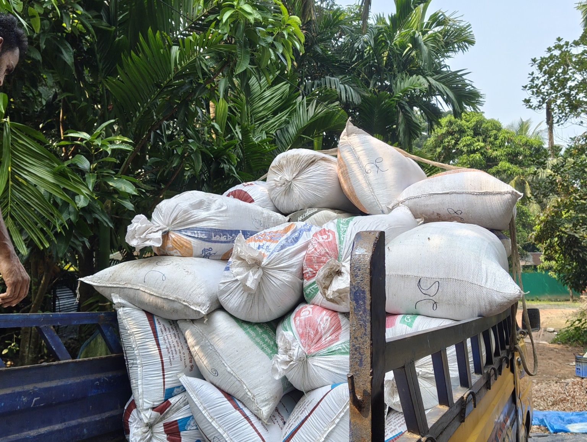

SHAHI GRASS SILAGE
Real Product • Ready for Delivery
SHAHI AGRO FARM
SHAHI GRASS SILAGE
Nutritious roughage, year-round feed supply, better feed utilization, easy storage and consistent quality — presented by SHAHI AGRO FARM.
The brand
Feed planning made more practical.
Grass silage can turn abundant grass into a stored roughage reserve, helping farmers build a more consistent feeding routine.
🌱
Quality Focus
Built around proper preparation, fermentation and airtight storage.
🔄
Consistency
A stored roughage option for times when fresh grass is less available.
📦
Convenience
Packaged feed that can be portioned as part of a daily routine.
🌾
Better Utilization
Use surplus grass as a feed reserve instead of letting it go to waste.
Ready when you are
ORDER NOW →
Choose SHAHI GRASS SILAGE.
All purchasing details are kept on the dedicated order page for a cleaner experience.
REAL SHAHI GRASS SILAGE
Our Silage. Ready for Farmers.
Real photos from SHAHI AGRO FARM showing our prepared silage bags and stock ready for handling and delivery.